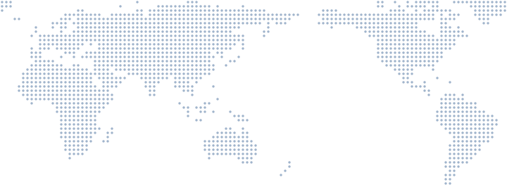
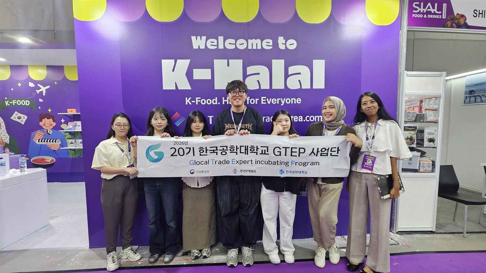
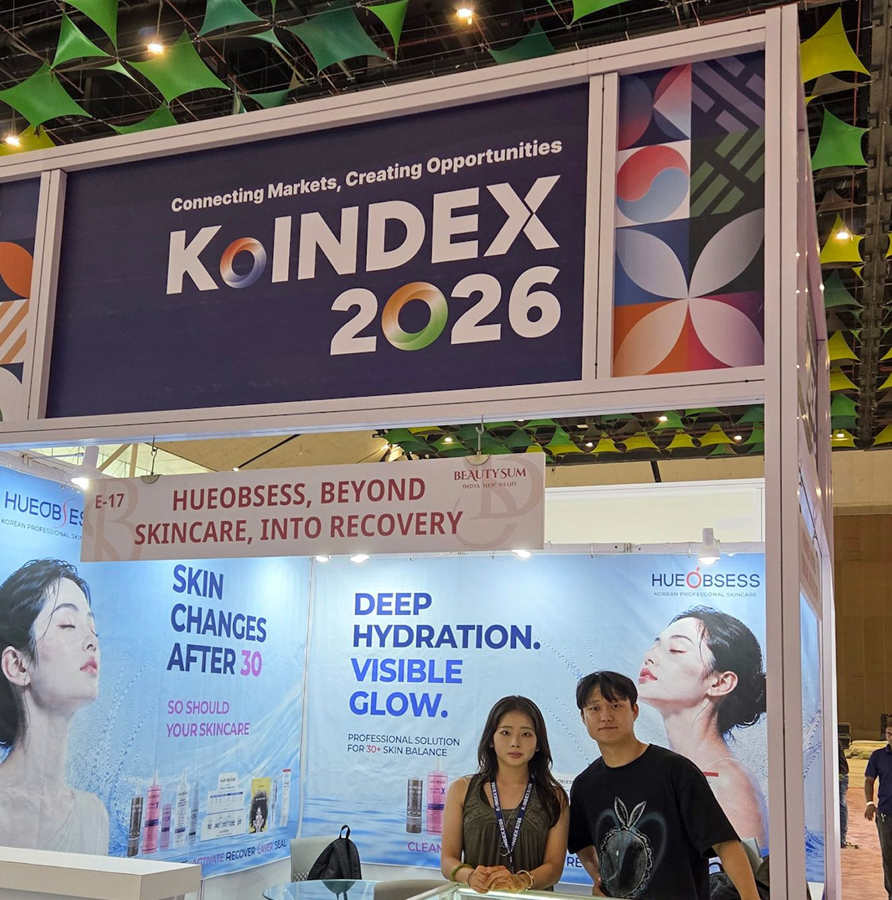
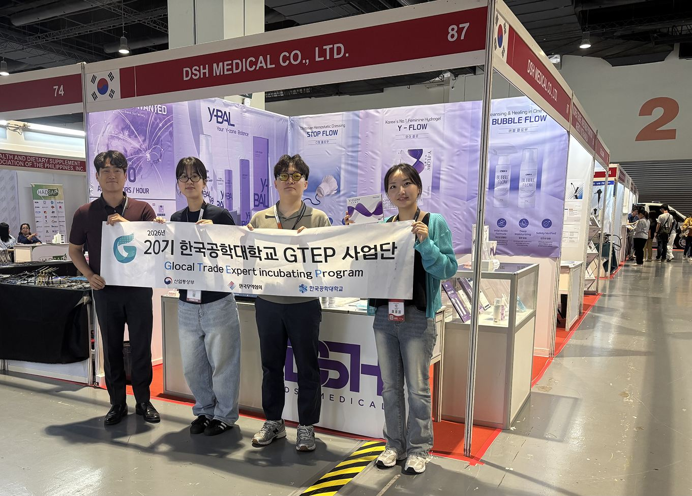
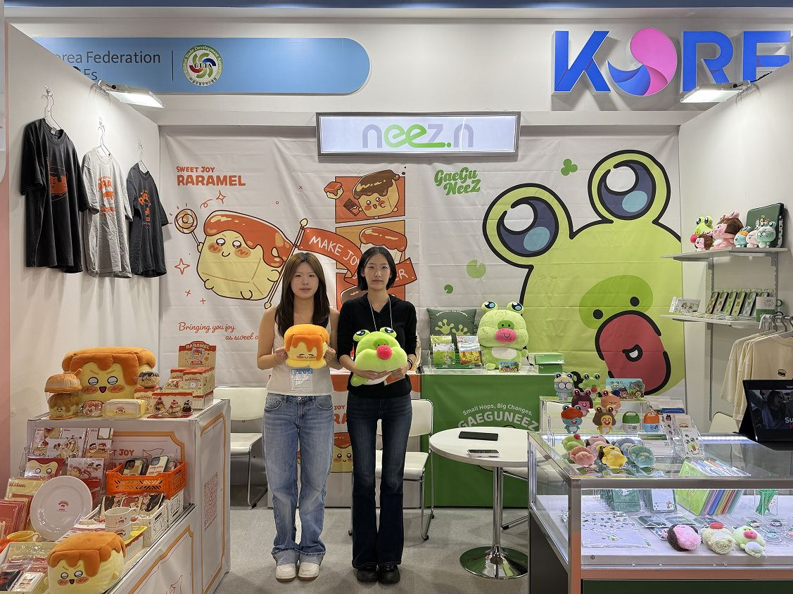
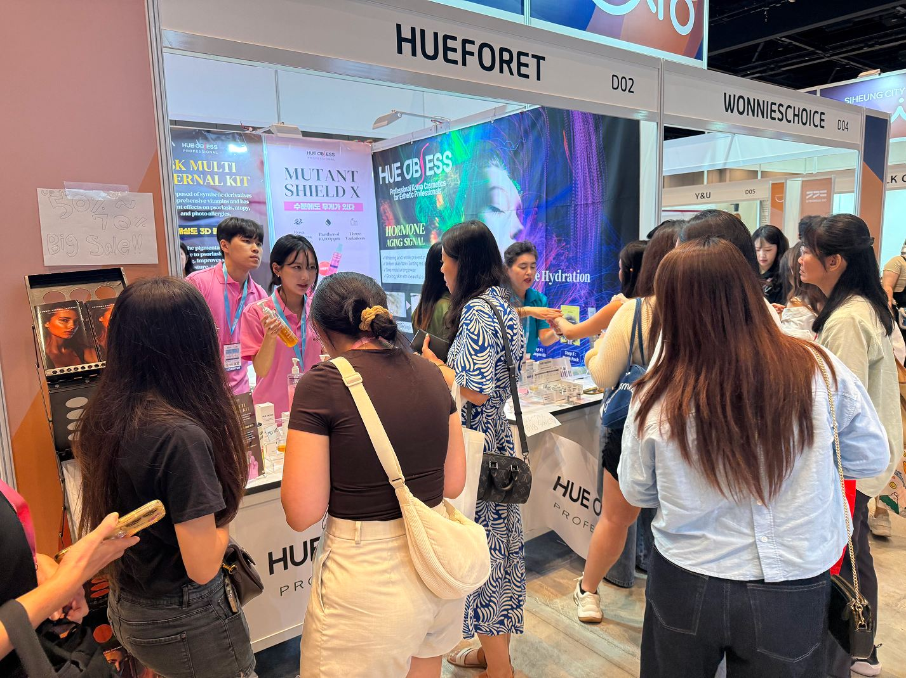

GTEP 사업 소개
한국공학대학교 지역특화청년무역전문가양성사업단(GTEP)은 2015년부터 학생과 기업이 함께하는 무역 교육을 운영해 왔습니다. 학생들은 협력기업의 제품을 공부하고 해외 현장에서 바이어에게 제품을 소개합니다. 기업은 그 과정에서 현지 고객의 반응을 듣고 새로운 거래처를 만납니다.
학교에서 배운 무역을 기업 현장으로
GTEP(Global Trade Expert Incubating Program)은 산업통상자원부가 주관하고 한국무역협회가 운영하는 청년 무역인재 양성 사업입니다. 무역 이론과 기업 현장실습을 연결합니다. 한국공학대의 2026년 특화지역은 중남미입니다. 학생들은 특화지역을 공부하는 한편 아시아와 북미 등 여러 시장에서 협력기업을 지원합니다.
12년째 이어온 사업단
우리 대학은 2015년부터 GTEP사업단을 운영하고 있으며, 현재 경영학부 이충석 교수가 단장을 맡고 있습니다. 무역 이론·실무 교육과 국내외 전시회 참가를 연계해 학생에게는 글로벌 실무역량을, 산학협력기업에는 해외시장 개척 기회를 제공합니다.
해외 현장
대학 보도로 확인한 GTEP 학생들의 해외 현장입니다.


INDONESIA · 2026인도네시아 SIAL 전시회, 국내 식품기업 18개사 해외 판로 지원 HONG KONG · USA · 2026홍콩 Food Expo PRO·미국 KCON USA에서 수출마케팅 실무
HONG KONG · USA · 2026홍콩 Food Expo PRO·미국 KCON USA에서 수출마케팅 실무
INDIA · 2026인도 KoINDEX 2026에서 시흥 기업의 무역 실무를 맡다
PHILIPPINES · 2026필리핀 PhilMedical Expo, 시흥 기업과 의료시장 공략
AUSTRALIA · JAPAN · 2026호주 멜버른·일본 도쿄 박람회에서 해외시장 개척 지원
MALAYSIA · 2025K-뷰티 엑스포 말레이시아, 시흥 기업 휴포레와 참가